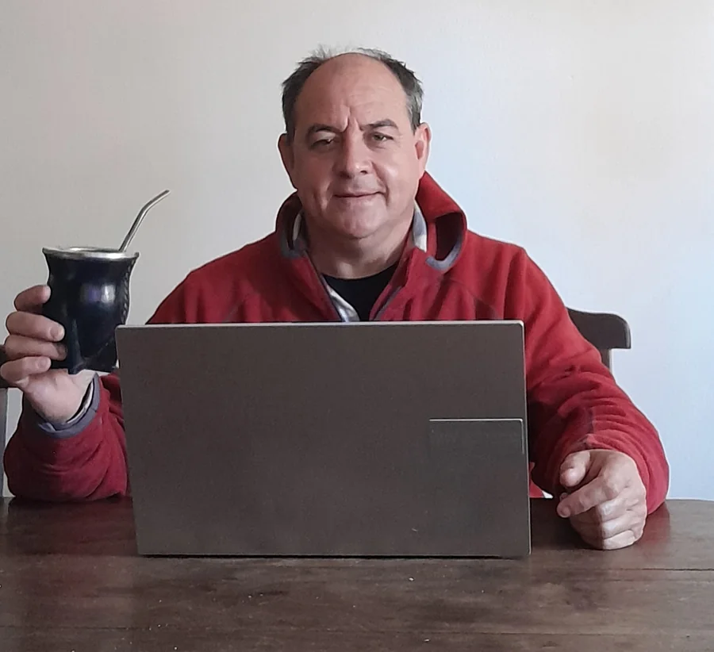

Hola, soy Julián Mozún
Fundador y responsable técnico de Bajo Control. Me encargo personalmente de la dirección, ejecución y el control de calidad en cada obra o instalación de la región.

Dirección técnica y operativa de Bajo Control
Como técnico graduado del Instituto ORT en Control Automático y Sistemas Digitales, fundé este espacio bajo tres pilares fundamentales: respaldo profesional, prolijidad en el detalle y soluciones definitivas.
A lo largo de los años construí mi reputación en 9 de Julio a base de trabajo honesto y la recomendación de cada cliente satisfecho.
"Mi meta es que tengas la absoluta tranquilidad de que cada trabajo en tu propiedad funcione exactamente como necesitás, sin fallas ni imprevistos."
Establezco mi centro operativo en 9 de Julio y dispongo de la logística necesaria para trasladar mis equipos técnicos y maquinarias a todas las localidades vecinas.
Mis valores profesionales
Confianza
Mi negocio se construyó sobre la confianza. Cada cliente es una relación de largo plazo, no una venta.
Precisión técnica
Cada instalación se hace con cuidado. Reviso, pruebo y ajusto hasta que todo funciona perfectamente.
Cercanía
La comunicación es centralizada y directa conmigo. Al no haber intermediarios, te garantizo asesoramiento técnico claro y respuestas ágiles ante cualquier duda.
Responsabilidad
Asumo la responsabilidad completa de los sistemas que implemento. Si se requiere algún ajuste o calibración posterior, vuelvo al terreno para solucionarlo.
Mi trayectoria
Comienzo instalando alarmas básicas en hogares de 9 de Julio. La recomendación de boca en boca fue el motor de crecimiento.
Incorporo sistemas de cámaras IP, riego automatizado y tecnología para piletas. La cartera de clientes crece sostenidamente.
Bajo Control se consolida como una marca de confianza en la región. Clientes de toda la zona confían sus proyectos en mis manos.
Continúo trabajando personalmente en cada proyecto, incorporando nuevas tecnologías y manteniendo los valores que me distinguen.
¿Hablamos?
Escribime para evaluar los requerimientos técnicos de tu propiedad, comercio o establecimiento rural.
Solicitar una Evaluación Técnica